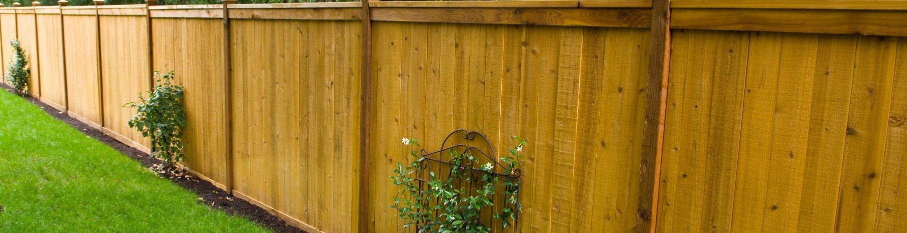
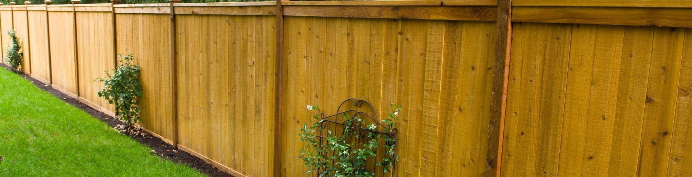
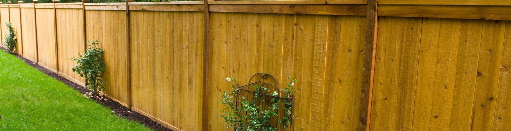
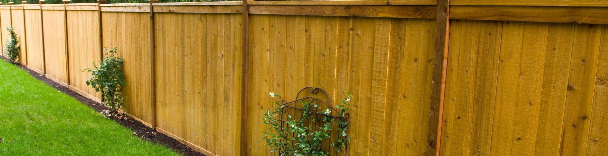

 

Since the first post went into the Ground in 1964 estate fencing has had exceptionally high standards due to the "no short cuts" policy.Passed on from grandfather too father to son.We are highly competent professional and exceptionally skilled fencers in adverse and challenging condtions estate fencing has no hesitation too jump in and get the job done right.plus with our policy held highly of "no short cuts" it means no call backs no stress and no uncertainty. We understand the difficulty finding quality contractors we follow through. We will work with you and your local council or managing body to ensure you have the right fencing for your situation and the quality that will have your neighbours talking is something we pride ourselves on.Our workmanship is our main advertising.We will deliver you a fence to be proud of that will last your family generations.